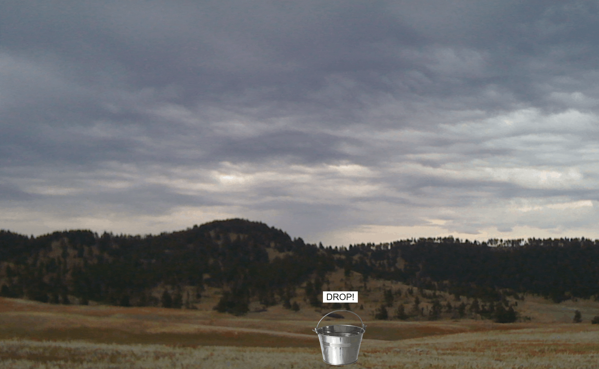
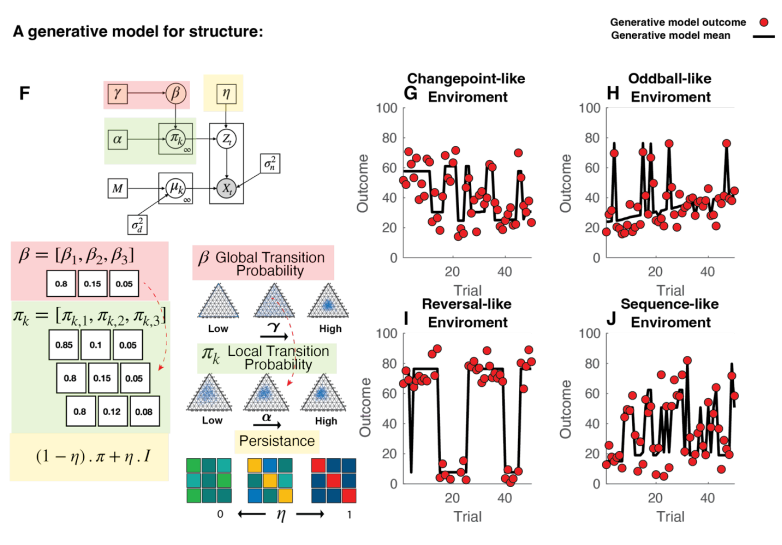

I am interested in how humans adapt to changing environments, form predictions from uncertain information, and transfer prior learning across contexts. My work combines computational modeling, behavioral experimentation, and data analysis to study how previous experience shapes future learning, motivation, and decision-making.

Figure 1: Example of the predictive inference task used to study how humans learn and adapt in changing environments. Participants position a bucket where they believe the next bag will fall based on previous observations.
To understand how prior experience influences human learning and decision-making in changing environments, and how people adapt when uncertainty reflects either meaningful change or random noise.
My current research focuses on
temporal structure learning: how humans adapt their
learning strategies in environments with different forms of uncertainty.
Recent work by Bakst & McGuire (2023) suggests that prior learning experience
can bias how humans interpret future outcomes across changing environments. Participants
exposed to highly volatile environments often continued to over-update
their beliefs even after transitioning into environments where surprising
outcomes should largely be ignored.
Building upon this work, I am investigating how prior experience influences
learning behavior across changepoint and oddball
environments, where surprising outcomes may either signal meaningful
environmental change or random noise.
This work is additionally informed by computational models of temporal
structure learning developed by Razmi et al. (2026), which model
environmental structure as inference over the hyperparameters of a
generative process.

Figure 2: Generative structures from Razmi et al. (2026) illustrating changepoint, oddball, reversal, and sequence-like environments. The persistent hierarchical Dirichlet process (pHDP) models how different transition structures can emerge from distinct hyperparameter configurations governing persistence, volatility, and environmental uncertainty.
A central component of adaptive learning is
prediction error: the difference between an expected
outcome and the outcome that is actually observed.
In changepoint environments, large prediction errors often indicate that
the environment itself has changed and beliefs should be updated rapidly.
In oddball environments, however, surprising outcomes are more likely to
reflect noise and should not strongly influence future predictions.
My work examines how humans distinguish between these forms of
uncertainty and how prior learning history biases future belief updating.
Figure 3: Example of prediction error during the task (shown in red). Participants continuously update beliefs based on the discrepancy between expected and observed outcomes.